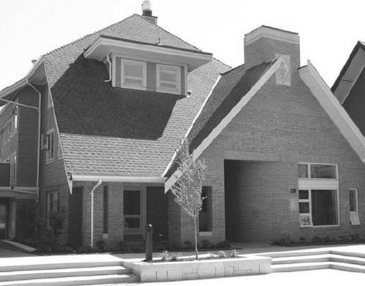

Chapter 29 on the roll
The Zeta Zeta


- Position on the roll#29
- InstitutionUniversity of British Columbia
- Chartered1935
- StatusActive since 1935
- Coat of armsfull-size PDF
In the archive
Pages that name the Zeta Zeta Chapter or its institution.
Named on 512 pages across 262 volumes of the archive.
…the Wranglers of Northwestern University, and the Alpha Kappa Alpha of the University of British Columbia. In due course a motion was duly made, seconded and passed to resume the regular business session. The regular session continued and the Permanent Co…
…ilon Society of the University of Kansas, and the Alpha Kappa Alpha of the University of British Columbia. 3. Committee on Communications reported and recommended the fol lowing: "It is in hearty agreement with the opinion of the Executive Council concern…
…y Pi Upsilon Society University of Kansas Alpha Kappa Alpha Society of the University of British Columbia Representatives from some of these petitioning parties will be present at the Convention and the Council bespeaks for them a respectful hearing. CHAP…
…recently been in the North west. He was very favorably impressed with the University of British Columbia and the petitioning body there. James Templeton '28 can be reached care Curtiss Flying Service, 231 S. LaSaUe St., Chicago. "Ziggy" is "up in the air…
Page97…e undersigned, active members of the Alpha Kappa Alpha Fra ternity, of the University of British Columbia, do hereby respectfully petition the Fraternity for a grant of a Charter of Membership in the said Psi Upsilon Fraternity. DATED at Vancouver, B. C,…
…of Classics and Professor Walter Sage of the Department of History of the University of British Columbia. Professor Logan is shortly going to Seattle to take the oath as a member of the Epsilon Phi Chapter. Walter Sage is the Honorary President of the Al…
Page50…ition, for the second time only, from the Alpha Kappa Alpha Society of the University of British Columbia
Page35…Wranglers of Northwestern University and one from Alpha Kappa Alpha of the University of British Columbia at Vancouver, B. C. After the usual long debates on the merits of these petitions the latter two were referred to the chapters for their individual v…
Page11…ty of Kansas. The Wranglers� Northwestern University. * Alpha Kappa Alpha� University of British Columbia. On motion duly made, seconded and passed, these petitions were referred to the Committee on New Business for consideration. Brother Corcoran read th…
…re making frequent trips to the petitioning Alpha Kappa Alpha house at the University of British Columbia. Brothers Seymour Davison and Carter Humeston were recently taken into the bonds. They were initiated along with Dr. H. T. Logan of Epsilon Phi chapt…
Page126…Wranglers of Northwestern University and one from Alpha Kappa Alpha of the University of British Columbia at Vancouver, B. C. After the usual long debates on the merits of these petitions the latter two were referred to the chapters for their individual v…
Page11…f Northwestern University and from the Alpha Kappa Alpha fraternity of the University of British Columbia. On motion duly made, seconded, and passed, these petitions were re ferred to the Committee on New Business. Brother Corcoran read a telegram of cong…
…f the Wranglers of Northwestern University and of Alpha Kappa Alpha of the University of British Columbia. After the usual debate these two petitions were voted on, for reference to the chapters for their consideration. The vote of the chapters will be ca…
Page11…of petitioning: The Wranglers� Northwestern University Alpha Kappa Alpha � University of British Columbia On motion duly made, seconded and passed, these petitions were referred to the Committee on New Business for consideration. It was moved, seconded an…
…ented and read the petition for a charter from. Alpha Kappa Alpha society� University of British Columbia as foUows: We the undersigned members of the Alpha Kappa Alpha hereby humbly petition the Executive and Chapters of Psi UpsUon Fraternity that they b…
…ved a petition again this year from the Alpha Kappa Alpha society from the University of British Columbia for a charter and submit same for your consideration. We understand that the Presi dent of their Chapter has come from Vancouver to address you and h…
Page8…No. 3. Resolved: That the petition of the Alpha Kappa Alpha Society at the University of British Columbia be referred to the Chapters of Psi Upsilon for a vote to be taken within thirty days. General Resolution No. 4. Be it Resolved by the Psi Upsilon Fra…
…H. T. Logan, EpsUon Phi, is a professor in the Classics Department of the University of British Columbia. Class of '08 Although his duties as doctor keep Brother George T. Wilson, Epsilon Phi, rather tied to New Westminster, British Columbia, he is an ac…
Page21TABLE OF CONTENTS page Message from President Douglas to Zeta Zeta Chapter 3 Installation of Zeta Zeta Chapter 6 Proceedings at Luncheon 9 Toasts and Speeches at Banquet 16 Brothers Who Have Paid Psi U Alumni Association Due…
…atory. The expenses of the Council in reference to the installation of the Zeta Zeta Chapter at the University of British Columbia amounted to $440.66, which were paid out of the General Fund. The Diamond Fund showed a surplus for the year of…
Page20…84 Annual Convention Notice 87 Legacies in Psi Upsilon 88 Short History of Zeta Zeta Chapter 90 Elmira Psi U's Hold Banquet 93 Jay Berwanger 94 Dean Hawkes Remarks on Fraternities 95 In Memoriam 96 Chapter Letters 107 Directory Executive Coun…
…ohnson was the third undergraduate to be elected a Rhodes scholar from the Zeta Zeta Chapter. Now, we introduce W. Jay Tomp kins, Rho '36 the son of Willard J. Tompkins, Delta '97. It has not been our pleasure to know Brother Tompkins persona…
Page31…fine reunion of the Rho which was held in Madison last May. Ralph Manning, President Zeta Zeta Chapter The Head of the House for the coming year is Brother Ralph Manning, a member of the class of 1937. Brother Manning, who promises to lead the Zeta Zet…
…shortly thereafter, one at McGill University in 1928 and the other at the University of British Columbia in 1935. Psi UpsUon is grateful for these three flourishing chapters. Our Nu Chapter and their loyal Alumni Association have made most attractive arr…
Page18…granted a two year leave-of-absence from the department of Classics of the University of British Columbia. A Rhodes Scholar in 1908, Brother Logan left his lectureship to go overseas, where, as a machine-gunner, he won the Military Cross and the rank of M…
…an K. Shackelton Cresco, Iowa Charles V. Shostrom Chicago, 111. ZETA ZETA� University of British Columbia Class of 1938 George F. T. Gregory Victoria Lawrence J. Wallace Victoria Class of 1939 Harry J. Bigsby Vancouver Lewis A. Freeman Rossland Clarence 0…
…Lyon Lightstone, Associate Editor. EPSILON PHI McOill University ZETA ZETA University of British Columbia
…r histories was furthered, the second volume of the Epitome was begun, the Zeta Zeta Chapter was installed at the University of British Columbia. Brother Douglas is so well known to all in the Fraternity that a long discourse on his distingui…
…hen Brother Harry Logan, of the Epsilon Phi Chapter and the Faculty of the University of British Columbia, read aloud to that great gathering of old and very new Psi U's a mes sage from Archie Douglas as Presi dent of the Executive Council, which The Diam…
…on also debated in Edmonton on January 21 in the competitions in which the University of British Columbia won the McGoun Cup. Both travellers report meeting a goodly number of Brothers on their trips. A wanderer from the Beta Beta, Jack Fallansbee, '39, d…
…ral. C. E. Davis, Associate Editor EPSILON PHI McGill University ZETA ZETA University of British Columbia
…functions this faU have included: a most enjoyable exchange dance with the Zeta Zeta Chapter; the annual Mothers' Club Dinner and Founder's Day Banquet; a fall informal and pledge dance. Brother Bill Magee was initiated early in the fall. Joe…
…Volk, Minneapolis, Minn. ; Clarence WoUcott, Minneapolis, Minn. ZETA ZETA University of British Columbia Class of 1940: Gerald Edward White, Victoria, B. C. Class of 1941 : Lionel Joseph Fournier, Pincher Creek, Alberta; Robert Camp bell Kenmuir, Vancouv…
…1^�McGill University�1928 34^9 Peel St., Montreal, Canada ZETA ZETA� Z Z� University of British Columbia�1935 1988 Western Pkwy., Vancouver, Canada The Greek symbols and the dates of the foundation of the chapters are included in the Chapter Roll.
Page67…Carter; John Keys (son of D. A. Keys, Nu '15); WaUace Moreland. ZETA ZETA University of British Columbia Class of 1943: Charles Everett Craig, Vancouver, B. C; WiUiam John McMaster, Vancouver, B. C; Gordon Brock Macfarlane, Vancouver, B. C; John Roger Me…
…Council, Brother Gordon B. McLaren, Nu '13, made an official visit to the Zeta Zeta Chapter. The Condition of the Fraternity : In general our chapters continue to be capably managed. Their business affairs are well conducted. Alumni cooperat…
Page19…thers are now taking an Officers' Training Course with the C.O.T.C. at the University of British Columbia. NU ALUMNI ASSOCIATION The annual meeting of the Nu Chap ter Alumni Association was held at the chapter house on the evening of Decem ber 13, 1939. A…
…hi into Psi Up sUon. J. A. Izard R. K. Thomson Associate Editors ZETA ZETA University of British Columbia As A result of spring freshman rushing Zeta Zeta announces the pledging on Wednesday, January 17, of 7 men. After a thorough grounding in fraternity…
…Convention in June. J. A. Izard R. K. Thomson Associate Editors ZETA ZETA University of British Columbia With examinations finished, activities at U.B.C. have come to a close. In recent weeks there have been few events of interest, so I feel this would b…
Page66…ass.; Samuel B. WUder, Orange, N. J.; Gilbert T. Wilkinson, Belmont, Mass. The Zeta Zeta Chapter held a successful one-day boat trip on August 15. Fifty actives, alumni, wives and sweethearts sailed to Bowen Island.
…George Street Toronto, Canada 3429 Peel Street Montreal, Canada Zeta Zeta University of British Columbia 4675 West 4th Avenue October 19, 1935 Vancouver, B. C., Canada 14
Page19ANNALS OF PSI UPSILON ZETA ZETA CHAPTER University of British Columbia October 19, 1935 The youngest Chapter of Psi Upsi lon has been established in the most youthful of the Canadian Universi ties. Not untk the autumn of…
…ntion voted to submit the petition of the Alpha Kappa Alpha Society of the University of British Columbia to the Chapters; called for a modifi cation by the chapters of certain initi ation features deemed detrimental; recommended the appointment of Clayto…
…rs was unanimous in favor of the petitioners and, on October 19, 1935, the Zeta Zeta Chapter of Psi Upsilon, our third Canadian Chap ter, was installed at the University of British Columbia, by Charles P. Spooner and R. Bourke Corcoran on beh…
Page38…Psi U�in fact, as soon as it was known that this group was to be come the Zeta Zeta Chapter�the members offered suggestions which resulted in the design adopted as their Coat-of-Arms. The knight and charger were re tained and symbolize the s…
…Valerie to pick up British troops. J. A. Izard Associate Editor ZETA ZETA University of British Columbia The Zeta Zeta is deeply grieved at the recent loss of one of our most beloved and distin guished brothers, Howie McPhee. His out standing qualities o…
…p and is now kneeling for the boys. Donald Rohr Associate Editor ZETA ZETA University of British Columbia This spring finds the Zeta Zeta transferring most of its time for extracurricular activity to military training. At Christmas time many passed their…
Page62…summer climate, and much variety in scenery and summer resourts. ZETA ZETA University of British Columbia New Officers for 1941-42 President� Gordon B. Macfarlane. Vice president� John O. Moxon.' Recording secretary � Donald D. Sturdy. Treasurer� William…
Page62…ushing manager, we are looking forward to a good season. ZETA ZETA CHAPTER University of British Columbia Chapter Communication With the start of college the Zeta Zeta chapter begins the 1941-42 session with high hopes. This year's university func tions a…
Page65….J^McGiLL University-1928 3429 Peel St.. Montreal, Canada ZETA ZETA� Z Z� University of British Columbia� 1935 4676 W.4th Ave., Vancouver, B. C, Canada The Greek symbols and the dates of the foundation of the chapters are included h the Chapter Roll.
Page63…ere representatives from 12 chapters and they came from as far away as the Zeta Zeta Chapter. The oldest Psi U present was Rev. Edward Taylor Sullivan, Beta Beta '89. Other brothers from the nine teenth century included Charles Henry Cobb and…
THE DIAMOND OF PSI UPSILON 217 University of British Columbia While no detailed account was re ceived up to April 20, yet another item forwarded to The Diamond discloses that a presentation did take place: The c…
…alker, '36 U.S.A. Julien F. Weber, Jr., '34 U.S.A. John C. WiU, '41 U.S.N. Zeta Zeta Chapter Brooke Anderson, '37 C.A.S.F. Pilot Off. John B. Armstrong, '40 R.C.A.F. Pilot Off. Leys M. Beaumont, '41 R.C.A.F. Joseph Bishop, '29 C.A.S.F. Lt. Ma…
…U songs the party broke up. t)AviD M. Armstrong Associate Editor ZETA ZETA University of British Columbia Canada is now well into its fourth year of the war and Zeta Zeta, although finding it increasingly difficult to carry on all its normal activities, i…
…ComeU, '33, 1227 Sherbrooke St., W., Montreal, P.Q., Canada ZETA ZETA�Z Z�University of British Columbia� 1935 c/o Kenneth Creighton 2405 W. 6th Ave., Vancouver, B. C, Canada A R. Hager, '28, c/o W. J. McMaster, '42, 576 Nanton Ave., Vancouver, B.C., Can…
Page35…the fun. Yours in the Bonds, Davto M. Armstrong Associate Editor ZETA ZETA University of British Columbia Zeta Zeta concluded its pledging period with the initiation of the new members into the chapter on Friday, November 19. The ini tiation, with Brother…
…he local fraternity which later became the Zeta Zeta of Psi Upsilon at the University of British Columbia, might well have thought he came straight from the venerable atmos phere of Oxford University. Although it is many years since Lo gan Hved at Oxford…
…ledging were a sufficient demonstra tion that Psi Upsilon standards at the University of British Columbia are still of the highest, W. Ajrthur McCellan, Secretary Zeta Zeta Alumni Pi Alumni Association Reports Lively Program On July 31, the annual busines…
…A University of British Columbia Since the last report to The Diamond, the Zeta Zeta Chapter has initiated the following men: Kosta J. Kfllis, Gordon Kersey, Norman
…active brothers and five pledges. Jim Templeton Associate Editor ZETA ZETA University of British Columbia Since the last time this Chapter was heard from we have passed our social highhght of the year. This was our Spring Formal which we held at the Capil…
Page28…I�E *�McGill University�192S 3429 Peel St., Montreal, Canada ZETA ZETA-Z Z�University of British Columbia� 1935 c/o Alumni President Alexander W. Fisher, '32, 675 W. Hastings St., Vancouver, B.C., Canada EPSILON NU-E N-Michigan State College-1943 810 W. G…
Page35…ted that "it takes four years to make a good Psi U." He also cautioned the Zeta Zeta Chapter not to act too rapidly as far as the erection of a new fraternity house is concerned if the cost of such house were to be limited to an expenditure o…
Page21…PHI� McGill University� 192S 3429 Peel St., Montreal, Canada ZETA ZETA�Z Z�University of British Columbia�1935 c/o Alumni President Alexander W. Fischer, '32, 675 W. Hastings St., Vancouver, B.C., Canada EPSILON NU-E N�MicmcAN State College-1943 810 W. Gr…
Page35…reported in a subsequent issue. David H. Hubel Associate Editor ZETA ZETA University of British Columbia Launching of a combined campaign by the active chapter and alumni of Zeta Zeta for a $20,000 house marked the opening of the first peace time term in…
…I�E *�McGiLL University� 192S 3429 Peel St., Montreal Canada ZETA ZETA-Z Z�University of British Columbia� 1935 c/o Alumni President Alexander W. Fisher, '32, 675 W. Hastings St., Vancouver, B.C., Canada EPSILON NU-E N�Michigan State College- 1943 810 W.…
Page35…eel more than welcome to attend. Associate Editor DAvro H. Hubel ZETA ZETA University of British Columbia With the opening of the fall term, Zeta Zeta, which has been without a house since the early years of the war, joined forces with the Alumni Associat…
…e draw most of our students. With the exception of our good friends at the University of British Columbia, the nearest Psi U Chapter is at the Uni versity of California, nine hundred miles away. In the conviction that whatever enhances our position enhanc…
Page9…ComeU, '38, 1227 Sherbrooke St. W., Montreal, P.Q., Canada. ZETA ZETA�Z Z�University of British Columbia�1935 c/o Alumni President Arthur Harper, '34, 470 Granvflle St., Vancouver, B.C., Canada EPSILON NU-E N�Michigan State College� 1943 810 W. Grand Riv…
Page35…who are stfll in the high schools. J. K. Leslie Associate Editor ZETA ZETA University of British Columbia After a two-week respite from "coUege joys," in which our New Year's Eve party was one of the more enjoyable events, the Zeta Zeta retumed, 37 strong…
…y of Toronto, in 1920; Epsilon Phi, McGill University, in 1928; Zeta Zeta, University of British Columbia, in 1935. Back to the States in 1943 with our young est Chapter, the Epsilon Nu, Michigan State College. 1847 Convention Delegates from 10 Chapters g…
…er, '34, and Mark Collins, '34, have been elected to the Execu tive of the University of British Columbia Alumni Association. Brother Harper is Presi dent of the Zeta Zeta Alumni organization. Charles W. Bjrazier, '30, was Assistant Counsel for the Provin…
…ted on his last year's visit to the University of British Columbia and the Zeta Zeta Chapter. In general, he stated that he was very much im pressed with the personnel of the Zeta Zeta Chapter, and considered it to be potentially a very stron…
Page22…GoodfeUow, '36, 207 Lockhart Ave., Montreal 16, P.Q., Canada ZETA ZETA-Z Z�University of British Columbia� 1935 c/o Alumni President Douglas Telford, '28, 408 Birks Bldg., Vancouver, BG., Canada EPSILON NU-E N-Michigan State College-1943 810 W. Grand Rive…
Page35…uld in other key positions. Frederick A. Tees Associate Editor I ZETA ZETA University of British Columbia The past month has been an active one for the Zeta Zeta. Brother Bud Speirs entered the campus election race for President of the Men's Athletic Dire…
…GoodfeUow, '36, 207 Lockhart Ave., Montreal 16, P.Q., Canada ZETA ZETA-Z Z-University of British Columbia-1935 c/o Alumni President Douglas Telford, '28, 408 Birks Bldg., Vancouver, B.C., Canada EPSILON NU-E N-Michigan State College�1943 810 W. Grand Rive…
Page36…ted on his last year's visit to the University of British Columbia and the Zeta Zeta Chapter. In general, he stated that he was very much impressed with the person nel of the Zeta Zeta Chapter, and considered it to be potentially a very stron…
…ng as a result of the beer party. Brother Ewing stated that members of the Zeta Zeta Chapter were present at the time and could substantiate the fact that the offenders were not members of our Fraternity and had not even been invited to atten…
…Teskey, Bowie, Gregus and Hanley. T. B. Hanley Associate Editor ZETA ZETA University of British Columbia The Zeta Zeta chapter is having a most suc cessful year and since the last issue of The Diamond has increased in strength from twenty-four to forty a…
Page33…niors, and ten of these twenty-one men graduated with academic honors. The University of British Columbia does not publish any academic standings of fraternities, but if such standings were pub lished, the chapter would probably stand at die top. In campu…
…, in print, to Brother Wal ter Ewing, '51, undergraduate delegate from the Zeta Zeta Chapter of the University of Brit ish Columbia, who very kindly gave to the senior Zeta Chapter three University yearbooks. This is the type of inter-chapter…
…That your Committee expresses its sincere regret that the Nu Chapter, the Zeta Zeta Chapter and the Epsilon Omega Chapter are unable, by reason of circumstances beyond their control, to furnish the required information; and Page Twenty-eight
…s of Psi Upsilon brotherhood. Ralph L. Swanson Associated Editor ZETA ZETA University of British Columbia On Friday, November 25, seven pledges were initiated. They were: Dick Grimmat, Bill Anstis, Dave Hummel, Bill Wood, Cam-
Page28…other also received the award as being the most outstanding athlete at the University of British Columbia. On the rugby team we also had seven other Brothers. We had three on the crew, two on the football team, one in swimming and one in track. The Zeta Z…
…lent and our spirits are high. ROHERT F. VeSSOT Associate Editor ZETA ZETA University of British Columbia Zeta Zeta has been having a good year under the capable leadership of Brother Hal Thompson. A number of social events kept the Chapter active last su…
…No delegates present at the Convention and no report submitted.) ZETA ZETA University of British Columbia ZETA ZETA (No delegates present at the Convention and no report submitted.) EPSILON NU Michigan State College EPSILON NU (G. Wilfiam Moody, '52). The…
…oodfellow, '36, 207 Lockhart Ave., Montreal 16, P.Q., Canada ZETA ZETA-Z Z-University of British Columbia-1935 1812 W. 19th Ave., Vancouver, B.C., Canada Arthur J. F. Johnson, '35, 2791 W. 36th Ave., Vancouver, B.C., Canada EPSILON NU�E N�'Michigan State…
Page39…it raore than ushered in the New Year. Zeta Zeta� (Jaraes A. Clarke, '54). The Zeta Zeta Chapter has just com pleted another successful year, and we expect to start the Fall term with 25 active Brothers. As usual, our Brothers have been active in…
Page26…the college and the fraternity. W. Farrell Hyde Associate Editor ZETA ZETA University of British Columbia The faU of 1951 has been a period of in creased activity here at Zeta Zeta and 1952 promises to be more of the same. The Uni versity enrollment has d…
…ual "Beach combers" brawl. James M." Solomonson Associate Editor ZETA ZETA University of British Columbia For the Brothers of the Zeta Zeta, the sum mer holidays started a lot earlier than they do for our Brothers in the American colleges and by the time…
Page28…oking forward to seeing you. Robert N. Cloutier Associate Editor ZETA ZETA University of British Columbia It was back to the books for the Brothers of the Zeta Zeta last week after another summer of travel, work and lots of fun. No sooner had we hung our…
Page32…recommending the adoption of the following resolutions: RESOLVED: That the Zeta Zeta Chapter of this Fraternity draw up a plan for a transportation pool of funds for Convention delegates and submit a copy ef such plan to each (Chapter of the…
…ch, Murray Semple, David Thompson, Douglas Turner, Roger Warren. ZETA ZETA University of British Columbia The Bonds of the Fraternity were extended to fourteen new men on November 29 as the Zeta Zeta climaxed one of the most hectic and successful mshing s…
Page37…o make this correction in the interest of accuracy. The Editors. ZETA ZETA University of British Columbia The first good news from the Zeta Zeta is that after a hectic spring rushing season we pledged seven more good men for Psi U from the very few rushee…
Page35138 THE DIAMOND OF psi UPSILON Zeta Zeta Chapter, April, 1953 vidual projects as painting of the whole exterior, and a complete rebuilding of the front stairs. The house was a veritable bee hive of…
Page32…o see you aU again. For information, please call the fraternity. ZETA ZETA University of British Columbia Scot Farncombe, Associate Editor Highhghting the activities of Zeta Zeta chapter's twenty-five actives right now is the business so necessary to the…
Page35…tter. Glen S. MacLaren, Zeta Zeta '55, reported te the Convention that the Zeta Zeta Chapter had not prepared a plan for a transportation peel of funds for Convention delegates, and that no such plan would be presented at the present Conventi…
…ZETA ZETA University of British Columbia Scot Farncombe, Associate Editor Zeta Zeta Chapter has concluded another very successful fall pledging period with the initiation of thirteen new brothers. These men were welcomed into the bonds at a…
Page31…ddleton (Theta Theta '22), following Brother White's official visit to the Zeta Zeta Chapter representing the Executive Council. The Executive Council feels that it is important that aU members of Psi Upsilon read this fine review of the curr…
…newly formed International League by defeating a New York team. ZETA ZETA University of British Columbia Once again we come to the close of another year and seek summer or permanent employ ment, whichever the case may be. It is with a certain amount of p…
…ll visit us. "Much" Maciejewsici, House Manager of the Zeta Zeta ZETA ZETA University of British Columbia Edward Burton, Associate Editor In the two short weeks since the beginning of the year, we've made a big improvement in the appearance of the House,…
Page29…report favorably te the annual Convention. Zeta Zeta� (Allen Baxter, '56). The Zeta Zeta Chapter was fortunate in initiating eighteen new Brothers ever the 19541955 term, more than offsetting the number of graduating Brothers, and increasing the…
Page24…and ff you happen to be in the Montreal area, why not visit us! ZETA ZETA University of British Columbia Edward Burton, Associate Editor Since our last report, we have pledged and initiated the following men: Bichard Butler, Terrance Peters, Keith Sandfo…
Page36100 THE DIAMOND OF PSI UPSILON ZETA ZETA University of British Columbia Edward Burton Associate Editor As the end of our academic year approaches we find our fratemal activities yielding tem porarily to the big push for e…
Page30…ie, Editor, The Diamond of Psi Upsilon, 4 West 43rd St., New York 36, N.Y. Zeta Zeta Chapter House, 1812 West 19th Ave., Vancouver, B.C. June 27, 1955 Dear Brother, When the March issue of The Diamond arrived about a week ago, the Zeta Zeta c…
…annual McGill Winter Carnival on the third weekend in February. ZETA ZETA University of British Columbia Terence D. Peters Associate Editor With the commencement of the fall term we have been concentrating our efforts on the rushing programme under the c…
Page38…rd week end in February. It promises to be an enor mous success. ZETA ZETA University of British Columbia Terence D. Peters Associate Editor The fall term was climaxed this year with the initiation of eleven new Brothers into the Chapter. These were Georg…
Page34…planned for May 5th. to formally end the active fraternity year. ZETA ZETA University of British Columbia The spring term this year has been a very successful one for Zeta Zeta and was ter minated with the spring formal held at the Hotel Georgia Ballroom…
…ll meet as many of our Brothers from other Chapters as possible. ZETA ZETA University of British Columbia The Zeta Zeta is looking forward to an other successful year. The executives for 195556 are; President, Bob Duggan; Vice-President,
…hapters, and hopes they will have a very successful second term. ZETA ZETA University of British Columbia Robert W. Morgan Associate Editor Sucha Singh President-elect of the Zeta Zeta for 1957-58; Rushing Chairman, 1956-57; elected to receive Junior Key…
Page39…G. Beck, '27, 572 Lansdowne Ave., Westmount, P.Q., Canada ZETA ZETA� Z Z� University of British Columbia_1955 1812 W. 19th Ave., Vancouver, B.C., Canada Harold W. Thompson, '52, 5912 Churchill St., Vancouver, B.C., Canada EPSILON NU�E N� Michigan State C…
Page31…d be very difficult to find a better house on the McGill campus. ZETA ZETA University of British Columbia Following a resolution adopted last year the Zeta Zeta concentrated on improving scholar ship within the chapter, and to that end initi ated restrict…
Page41…R. G. Beck, '27, 572 Lansdowne Ave., Westmount, P.Q., Canada ZETA ZETA�Z Z�University of British Columbia� 1935 1812 W. 19th Ave., Vancouver, B.C., Canada Cameron Aird, '.'i2, 1705 W. 59th Ave., Vancouver, B.C., Canada EPSILON NU�E N�Michigan State Collec…
…ostatic copy of which is in each of our Chapter Houses. Delegates from the Zeta Zeta Chapter, which had been installed the previous October, were welcomed to their first Psi Upsilon Convention. Psi Upsilon and the World Today: Around the moon…
Page15…cut�A. W. Griswold, Beta '29. From a chapter letter just received from the Zeta Zeta Chapter at the University of British Columbia, we are proud and happy to welcome another Psi U President at Pacific University, Forest Grove, Oregon�Brother…
Page11…c Uni versity for five years. Brother Armstrong was a 1932 graduate of the University of British Columbia. He was initiated by the Xi chapter in 1935, the year the Zeta Zeta chapter received its charter from Psi Upsilon. A cordial invitation has been issu…
Page26…a fine job and the chapter is certainly the better for his work. ZETA ZETA University of British Columbia 'Jf'^ ^ Alan Groves \^ f Associate Editor Of paramount importance this year to every Zeta Zeta active and alumnus is the proposed new fraternity hous…
Page38…s faced, primarily by the delegates who were members of the committee from University of British Columbia, Dartmouth CoUege, New York University, Syra cuse University and the University of Wisconsin. A discussion from the floor ensued, and a number of que…
…We hope to be seeing a lot of you at the Con vention in the faU. ZETA ZETA University of British Columbia Anthony G. Vincent Associate Editor As the Brothers of Zeta Zeta leave U.B.C. after the spring exams, they can look back upon some signfficant achiev…
Page39…G. Beck, 27, 572 Lansdowne Ave., Westmount, Quebec, Canada. ZETA ZETA-Z Z-University of British Columbia-1935 ,;; � � Box 162, Station A, Vancouver 1, B.C., Canada. Norman L. Ornes, 53, Box 162, Station A, Vancouver 1, B C Canada EPSILON NU-E N-MicfflGAN…
Page34…U, '36, 464 Strathcoma Ave., Westmount, Montreal 6, P.O., Canada ZETA ZETA�University of British Columbia� 1935 4200 W. 11th Ave., Vancouver 8, B.C. Canada Norman L. Ornes, '.53, 960 E. 39th Ave., Vancouver, B.C., Canada EPSILON NU-MicHiGAN State College-…
Page42…the very best as they prepare to take over their new po sition. ZETA ZETA University of British Columbia Anthony G. Vincent Associate Editor The Zeta Zeta looks back on the last few months with the feeling that it has success fuUy endured a period of tri…
…the Theta Epsilon, having won it three years in a row. RESOLVED : That the Zeta Zeta Chapter be commended for highest scholastic improvement during the academic year ended June, 1959, and that the convention award the plaque to the Zeta Zeta…
…U, '36, 464 Strathcoma Ave., Westmount, Montreal 6, P.Q., Canada ZETA ZETA-University of British Columbia-1935 2260 Wesbrook Crescent, Vancouver 8, B.C., Canada Norman L. Ornes, '53, 960 E. 39th Ave., Vancouver, B.C., Canada EPSILON NU-Michigan State Coll…
Page52…astic achievement. The social calendar kept everyone very busy here at the Zeta Zeta Chapter. Serenading the sorority pledges started the year off and every one thought it was great fun. Homecoming was celebrated thoroughly by everyone, al th…
…U, '36, 464 Strathcoma Ave., Westmount, Montreal 6, P.Q., Canada ZETA ZETA�University of British Columbia� 1935 2260 Wesbrook Crescent, Vancouver 8, B.C., Canada Donald A. Duguid, '51, 851 Prospect, North Vancouver, B.C., Canada EPSILON NU-MicHiGAN State…
Page40…plaque and the rotating cup for the academic year ended June, 1960, to the Zeta Zeta Chapter for its high scholastic achievement. RESOLVED: That the Rho Chapter be commended for the highest scholastic improvement during the academic year ende…
…year here at Williams and I return to studying for final exams. ZETA ZETA University of British Columbia Terry Upgaard, Associate Editor This past year at Zeta Zeta will be remem bered not only for an outstanding rushing program and great success in camp…
Page32…the Chapter scholarship awards. Achievement plaques were presented to the Zeta Zeta Chapter, for highest academic standing, and to the Rho Chapter, for the greatest improvement over the previous year. Brother Eugene Vinet, E Phi '11, most fa…
…ohn Cleghom, retiring president, for a dif ficult job well done. ZETA ZETA University of British Columbia The Executive Associate Editors Lffe at the Zeta Zeta has been varied and interesting during the past faU term. Rushing, which began during the first…
…owth and achievement for Psi Upsilon at Northwestern University. ZETA ZETA University of British Columbia Peter Steele, Associate editor The initiation of the fall pledge class of 1961 in the third week of January marshalled in the beginning of a hectic t…
Page30…rother Jim Wong cooked up. a fantastic Laurie Frisby '63, president of the Zeta Zeta Chapter.
Page32…plaque and the rotating cup for the academic year ended June, 1962, to the Zeta Zeta Chapter for its outstanding academic achievement. Page Eight
…eal. We look forward to their visits to the house in the future. ZETA ZETA University of British Columbia Roy Foster, Associate Editor The first event in the spring term was the initiation of the pledges that received a pass ing average in their Christmas…
Page34…lon Phi�Brian C. Morton, President, 3429 Peel St., Montreal, P.Q., Canada. University of British Columbia-Zeta ZETA-Christopher J. M. Thomson, Rushing Chairman, 2260 Westbrook Crescent, Vancouver, B.C., Canada. Michigan State University-Epsilon Nu�Douglas…
Page23…chair. He also invited the convention to hold the 1965 convention with the Zeta Zeta Chapter. On motion duly adopted, the convention recessed at 4:07 p.m. to enable the committees to prepare their reports. The convention reconvened at 5:23 p.…
…hospitahty and offer a standing invitation up here in Montteal. ZETA ZETA University of British Columbia Ray Foster Associate Editor The first big task immediately following the summer vacation at Zeta Zeta was the fall rush. This year we had a very spir…
Page64…ghest relative academic achievement tor j^j.^ .Llovd Salter II 1962 to the Zeta Zeta Chapter. The Chap- pu Wilham J. Kodros ter akeady has the plaque and cup, which Omega Robert B. Williams has just been returned from Rho and Pi Alden Burr Ca…
…Case of the College Fraternity 177 Dartmouth Psi U's Canoe the Danube 180 Zeta Zeta Chapter of Psi Upsilon 181 George Louis Brain, Iota '20 191 Robert Powell Hughes, Delta '20 192 Necrology 193 List of Chapter Rushing Chairman 196 The Diamon…
…Suite 1616, 630 Dorchester Blvd. West, Montreal 2, P.Q., Canada Zeta Zeta� University of British Columbia� 1935� 2260 Wesbrook Crescent;! Vancouver 8, B.C., Canada; Calvin B. Easter, '56, Box 162, Station A. Vancouver 1, B.C., Canada .;l Epsilon Nu� Michi…
Page52…onclusion of the first term lectures dominated social interests. ZETA ZETA University of British Columbia Zeta Zeta chapter commenced the fall term with an enthusiastic and successful rushing program, sparked by rush chairman Mike Pearson. A series of inf…
…The activities and accomplishments of the Fall term were extensive at the Zeta Zeta Chapter, but this Spring term has seen an even greater pro gram of events taking place. In addi tion, many Psi U's distinguished themselves in various facets…
…30 Dorchester Blvd., West, Suite 2265, Montreal 2, P.Q., Canada Zeta Zeta� University of British Columbia� 1935� 2260 Wesbrook Crescent, Vancouver 8, B.C., Canada; Robert E. Eades, '62, Box 162, Station A., Vancouver 1, B.C., Canada Epsilon Nu� Michigan S…
Page50…Curt Watkins, Lachine, Que.; Greg Wong, Montreal, Que. ZETA ZETA 24 At the Zeta Zeta Chapter on Janu ary 13 twenty-four men joined the expanding Brotherhood of Psi Upsi lon. The formal initiation was the cul mination of an extensive Pledging…
…ated from Burnaby South High School. Brother Foster has been active in the Zeta Zeta Chapter where he was Associate Editor of the Zeta Zeta Zephyr and Diamond in 1962-1963, the house Rushing Chairman 19651966, and will be president of the act…
Page10…rsity of Washington�1916 University of Toronto�1920 McGill University�1928 University of British Columbia�1935 Michigan State University� 1943 Northwestern Untversity-1949 Address Union College, Schenectady, N.Y. 115 W. 183rd St., New York, N.Y. South Ple…
Page36…men this fall, and its academic standing among the 13 fraternities on the University of British Columbia campus has improved, moving up from last to seventh place. It is too soon to make a generalization about the effect of actions taken by the Chapter S…
Page2735 ZETA ZETA University of British Columbia Another successful year for Zeta Zeta started a week before the com mencement of the academic year. As the brothers started returning to the house, t…
Page37…t ruby club in the nation, retaining the World Cup in competition with the University of British Columbia, and waUoping Notre Dame for the second year in a row, 15-3. Structurally, the house has never looked better. Our Alumni have been of invaluable help…
…so worked in the past as a stock clerk and a gardener for other employers. The Zeta Zeta Chapter has enjoyed devoted service from Brother Hoole. He has served as Pledge Trainer, sec ond Vice President, and First Vice President in that order, and…
…hn Cleghorn, '62, 3083 Trafalgar Ave., Mon treal 6, P.Q., Canada Zeta Zeta�University of British Columbia�1935� 2260 Westbrook Crescent, Vancouver 8, B.C., Canada. Alumni President: Norman CoUingwood '63, 4070 West 36th St., Vancouver, B.C., Canada Epsilo…
Page52…g the champion ships. The academic, athletic, and social prospects for the Zeta Zeta Chapter of Psi Upsilon look very promising this year. The Brothers of the active chapter are working together to further their aims and achieve the goals set…
…The wrestling, and track and field teams excelled against their opponents. The Zeta Zeta Chapter is just now beginning to build up momentum to capture the Interfra temity Athletic Cup emblematic of supremacy among fraternities at U.B.C. Academica…
…ld F. Chahners, Zeta Zeta '69, is the vice-president of the chapter at the University of British Columbia. He is currently studying economics and political science, and hopes to continue to graduate school after re ceiving his B.A. next June. Don grad uat…
Page27…ached such a low point that the situation is ir revocable. At present, the Zeta Zeta Chapter is strong on U.B.C. campus but I doubt very much that if we remain as we have over the past ten years some future writer from Z.Z. will be able to ma…
Page22…its. Realizing the importance of in tellectual growth for this generation, Zeta Zeta Chapter has embarked on a program of speakers and debates. In doing so, the chapter hopes to advance new interests of the Broth ers as weU as the new rushees…
…rsity of Washington�1916 University of Toronto�1920 McGill University�1928 University of British Columbia�1935 Michigan State University�1943 Northwestern UNrvERSiTT�1949 Address Union CoUege, Schenectady, N.Y. 115 W. 183rd St., New York, N.Y. South Pleas…
Page35…n Cleghorne, '62, 3083 Trafalgar Ave., Mon treal 6, P.Q., Canada Zeta Ze*a�University of British Columbia�1935� 2260 Westbrook Crescent, Vancouver 8, B.C., Canada. Alumni President: Norman CoUingwood, '63, 4070 West 36th St., Vancouver, B.C., Canada Epsil…
Page19…omp son & McConnell (A. Kenneth Thomp son is also a member of Psi Upsilon, Zeta Zeta Chapter, class of 1949). Brother Collingwood was born in the Province of Saskatchewan and has lived in British Columbia for almost 20 years. He attended the…
13 Epsilon Nu Zeta Zeta This year's edition of the Zeta Zeta Chapter has been somewhat less than successful. The year began with about 12 active Brothers with the foUowing officers: President, Phfl McCutcheon; 1st Vice…
…urphy, '56, 250 Lansdowne Ave., No. II, Westmount, P.Q., Canada Zeta Zeta� University of British Columbia� 1935� 2260 Westbrook Crescent, Vancouver 8, B.C., Canada. Alumni President: John D. Stibbard, 3735 Capilano Rd., North Vancouver, B.C., Can. Epsilon…
Page24…Murphy, '56, 250 Lansdowne Ave., No. 11, Westmount, P.Q., Canada Zeta Zeta�University of British Columbia�1935� 2260 Westbrook Crescent, Vancouver 8, B.C., Canada. Alumni President: John D. Stibbard, 3735 Capilano Rd., North Vancouver, B.C., Can. Epsilon…
Page20…urphy, '56, 250 Lansdowne Ave., No. 11, Westmount, P.Q., Canada Zeta Zeta� University of British Columbia� 1935� 2260 Westbrook Crescent, Vancouver 8, B.C., Canada. Alumni President: John D. Stibbard, 3735 Capflano Rd., North Vancouver, B.C., Can. Epsilon…
Page24…Murphy, '56, 250 Lansdowne Ave., No, II, Westmount, P.Q., Can. Zeta Zeta� University of British Columbia� 1935� 2260 Westbrook Crescent, Vancouver 8, B.C., Can, Alumni President: Gerald F. Simons, '69, 1457 East 27th Stieet, Vancouver, B.C, Can, Epsilon…
Page20…ty (which he had joined at McGiU in 1908) would establish a chapter on the University of British Columbia campus. A local group was interested and sought his advice. They met one day in the library of Logan's home, on McGill Road. The nearest chapter of P…
…Murphy, '56, 250 Lansdowne Ave., No. II, Westmount, P.Q., Can. Zeto Zeta� University of British Columbia� 1935� 2260 Westbrook Crescent, Vancouver 8, B.C., Can. Alumni President: Gerald F. Simons, '69, 1457 East 27th Stieet, Vancouver, B.C., Can. Epsilon…
Page24…. Murphy, '56, 250 Lansdowne Ave., No. 11, Westmount, P.Q., Can. Zeta Zeto�University of British Columbia�1935� 2260 Westbrook Crescent, Vancouver 8, B.C., Can. Alumni President: Gerald F. Simons, '69 1457 East 27th Street, Vancouver, B.C., Can. Epsilon N…
Page32…Zeta's history. Currently there are ten fraternities on the campus of the University of British Columbia. Eps i Ion. Nu The Epsilon Nu is a good chapter. The house is an attractive one and in good shape. One could not"help but be impressed with the under…
Page47…ent: J. R. Garland, '36, 341 Redfern Ave., Westmount, P.Q., Can. Zeta Zeta�University of British Columbia�1935� 2260 Westbrook Crescent, Vancouver 8, B.C., Can. Alumni President: Gerald F. Simons, '69, 1457 East 27th Stieet, Vancouver, B.C., Can. Epsilon…
Page40…ent: J. R. Garland, '36, 341 Redfern Ave., Westmount, P.Q., Can. Zeta Zeta�University of British Columbia�1935� 2260 Westbrook Crescent, Vancouver 8, B.C., Can. Alumni President: Robert L. Hawkins, '62, 453 West 12th Stieet, Vancouver, B.C., Can. Epsilon…
Page32…ent: J. R, Garland, '36, 341 Redfern Ave,, Westmount, P.Q,, Can. Ze*a Zefa�University of British Columbia�1935� 2260 Westbrook Crescent, Vancouver 8, B.C., Can. Alumni President: Robert L. Hawkins, '62 453 West 12th Street, Vancouver, B.C., Can. Epsilon N…
Page32…ed your visit and the tre mendous interest shown by the Fra ternity in the Zeta Zeta Chapter. "Twelve actives have returned this year and so far we have six pledges, I am optimistic that we will have ten pledges by Christmas, Most of our ac t…
…ent: J. R. Garland, '36, 341 Redfern Ave,, Westmount, P,Q., Can. Zete Zete�University of British Columbia�1935� 2260 Westbrook Crescent, Vancouver 8, B.C., Can. Alumni President: Robert L. Hawkins, '62, 453 West 12th Street, Vancouver, B.C., Can. Epsilon…
Page36…nt: John R. Garland, '36 341 Redfern Ave., Westmount, P.Q., Can. Zeta Zete�University of British Columbia�1935� 2260 Westbrook Crescent, Vancouver 8, B.C. Can. Alumni President: Robert L. Hawkins '62* 453 West 12th St., Vancouver, B.C., Can. ' Epsilon Nm�…
Page36…t: John R. Garland, '36, 341 Redfern Ave., Westmount, P.Q., Can. Zeta Zeta�University of British Columbia�1935� 2260 Wesbrook Crescent, Vancouver 8 B.C., Can. Alumni President: Robert L. Hawkins '62' 453 West 12th St., Vancouver, B.C., Can. Epsilon Nm�Mic…
Page36…, '36, 4854 Cote des Neiges 2004, Monti-eal H3G IV 7, P.O., Can. Zeta Zeto�University of British Columbia�1935� 2260 Wesbrook Crescent, Vancouver 8, B.C., Can. Alumni President: Robert L. Hawkins, '62, 453 West 12th St., Vancouver, B.C., Can. Epsilon Nm�M…
Page36…., '69, 5302 Lake Washington Blvd., N.E., Kirkland, Wash. 98033 Zeta Zeta� University of British Columbia� 1935� 2260 Westbrook Crescent, Vancouver 8, B.C., Can. Alumni President: Robert L. Hawkins, '62, 453 West 12th Ave., Vancouver, B.C., Can. Epsilon N…
Page36…., '69, 5302 Lake Washington Blvd., N.E., Kirkland, Wash. 98033 Zeta Zeifl-University of British Columbia�1935� 2260 Wesbrook Crescent, Vancouver 8, B.C., Can. Alumni President: Robert L. Hawkins, '62, 453 West 12th Ave., Vancouver, B.C., Can. Epsilon Nn�…
Page36…eport received. ZETA ZETA 1935 Heading into the 1974-75 academic year, the Zeta Zeta Chapter of Psi Upsilon is in better shape than at any other time in this decade. Thanks to the financial support of our alumni, our House is being re furbish…
…iUiam E. Acomb, Jr., '69, 8016 172nd, N.E., Redmond, Wash. 98052 Zeta Zeta�University of British Columbia�1935� 2260 Wesbrook Crescent, Vancouver 8, B.C., Can. Alumni President: Robert L. Hawkins, '62, 453 West 12th Ave., Vancouver, B.C., Can. V5Y 1V4 Eps…
Page36…cron University of Illinois Theta Theta University of Washington Zeta Zeta University of British Columbia Epsilon Nu Michigan State University Epsilon Omega Northwestern University Gamma Tau Georgia Institute of Tech. Chi Delta Duke University NOTE: For C…
…en C. Bacon, Jr. '60, P.O. Box 1 12067, Seattle, Wash. 98102 ,J Zeta Zeta� University of British Columbia� 1935� m 2260 Wesbrook Crescent, Vancouver, B.C., Can. M V6T 1W3. Alumni President: Robert L. Hawkins, .1 '62, 453 West 12th Ave., Vancouver, B.C., C…
Page36…tary THETA THETA 1916 No report received. ZETA ZETA 1935 Convention Report The Zeta Zeta Chapter is presently in singularly poor shape. This un pleasant condition is, in my opinion, the result of several tendencies aris ing from the difficulties…
…of British Columbia. It took the place of the regular Winter Meeting which Zeta Zeta Chapter House A view of the campus of the University of British Columbia has been held customarily in New York City. Eleven members of the Executive Council…
…: Keith M. CaUow '49, 1000 Pacific j Bldg., Seattie, Wash. 98104 Zeta Zefa�University of British Columbia�1935� 2260 Wesbrook Crescent, Vancouver, B.C., Can. V6T 1W3. Alumni President: Wflliam S. Mcin tosh '73, 111-2290 Marine Dr., West Vancouver, B.C., C…
Page28…t: Keith M. Callow '49, 1000 Pacific Bldg., Seattle, Wash. 98104 Zeta Zeto�University of British Columbia�1935� 2260 Wesbrook Crescent, Vancouver, B.C., Can. V6T 1W3. Alumni President: WUUam S. Mcin tosh '73, 111-2290 Marine Dr., West Vancouver, B.C., Can…
Page28…nt: Keith M. CaUow '49, 1000 Pacific Bldg., Seattle, Wash. 98104 Zeta Zeto�University of British Columbia�1935� 2260 Wesbrook Crescent, Vancouver, B.C., Can. V6T 1W3. Alumni President: WUliam S. Mcin tosh '73, 111-2290 Marine Dr., West Vancouver, B.C., Ca…
Page24…received. ZETA ZETA 1935 1976-77 has brought hopes of pros perity' to the Zeta Zeta Chapter. A
…t: Keith M. Callow '49, 1000 Pacific Bldg., Seattle, Wash. 98104 Zeta Zeto�University of British Columbia�1935� 2260 Wesbrook Crescent, Vancouver, B.C., Can. V6T 1W3. Alumni President: Malcolm K. Telford '65, 9551 Glen Acres Dr., Richmond, B.C., Can., V7A…
Page24…ia University of Minnesota University of Illinois University of Washington University of British Columbia Michigan State University Northwestern University Georgia Institute of Tech. Duke University NOTE: For Chapter address, see back Andrew M. Brooks '78…
…ent: Keith M. Callow '49, 1000 Pacific Bldg., Seattle, WA 98104 Zeta Zeta� University of British Columbia� 1935� 2260 Wesbrook Crescent, Vancouver, B.C., Can. V6T 1W3. Alumni President: Malcolm K. Telford '65, 9551 Glen Acres Dr., Richmond, B.C., Can., V7…
…ith a strong alumni turnout supplemented liy a number of Brothers from the Zeta Zeta Chapter in Vancouver, The recounting of old tra ditions and tales of the past helped both actives and pledges to see that the spirit of Psi Upsilon is long l…
…Gooch '67, 48 Sweetbriar Dr., Beaconsfield, P.Q., Canada H9W 5M3 Zeto Zeta�University of British Columbia�1935�2260 Westbrook Mall, Vancouver, B.C., Can. V6T 1W6. Alumni President: Malcolm K. Tefford '65, 2548 17th Ave., Port Alberni, B.C., Can. V9Y 3A7 E…
Page20…Gooch '67, 48 Sweetbriar Dr., Beaconsfield, P.Q., Canada H9W 5M3 Zeta Zefa�University of British Columbia�1935�2260 Westbrook Mall, Vancouver, B.C., Can. V6T 1W6. Alumni President: Malcolm K. Telford '65, 2548 I7th Ave., Port Alberni, B.C., Can. V9Y 3A7 E…
Page16…tramurals Career: Medicine Alpino Costagliola BRIAN D. EGAN, Zeta Zeta '80 University of British Columbia Home: Scarborough, Ontario, Canada Major: Biology/Zoology Campus: J.V. Rugby Chapter: Past President, Social Chair man, Intramurals Career: Business…
…half century ago � we shall be privileged to enjoy the hospitality of the Zeta Zeta Chapter, in which the Fraternity takes great pride. We shall be together for five days of fine fellowship, serious work, and good times. The course of the Fr…
…ega, Mu, Rho, Omicron, Epsilon Omega; Pacific � Zeta Zeta, Theta Theta. 2) The Zeta Zeta Chapter at the Uni versity of British Columbia in Vancouver to host the 138th Convention in 1981. 3) Norman J. Schoonover, Theta Theta '46 elected for a two-…
THE DIAMOND ? PSI UPSILON ZETA ZETA CHAPTER UNIVERSITY OF BRITISH COLUMBIA 1 38th CONVENTION AUTUMN USPS 156-460 1981
…st '42 Roland B. Winsor '27 (18) Norman P. Woods '68 (2) ZETA ZETA CHAPTER University of British Columbia W. Thomas Brown '32 Russell J. Bulger '28 (6) John M. Cruickshank '49 Robert E. Eades '62 (2) Calvin B.Easter '56 (12) J. Dale Emery '62 Terrance W.…
…re deRochemont '83 President ZETA ZETA University of British Columbia 1935 The Zeta Zeta Chapter at the Universi ty of British Columbia is in the throes of change. Old traditions are being resur rected from the ashes, while proud new traditions a…
…Chairman; Intramurals Career: Undecided A. DENNIS BROUGHAM, Zeta Zeta '83 University of British Columbia Home: Thunder Bay, Ontario, Canada Major: Creative Writing Campus: Skiing, Rugby, Football Chapter: House Manager; Past Rush Chairman, Archivist Care…